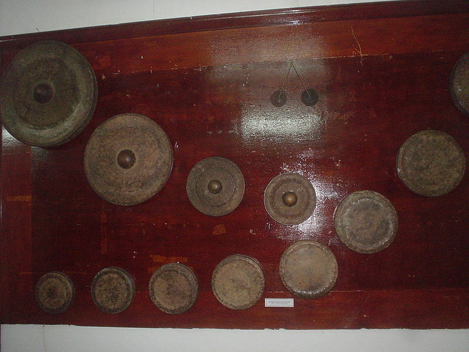

Cồng chiêng là nhạc cụ thuộc bộ gõ, được làm bằng đồng thau, hình tròn như chiếc nón quai thao, đường kính khoảng từ 20 cm đến 60 cm, ở giữa có hoặc không có núm. Người ta dùng dùi gỗ có quấn vải mềm (hoặc dùng tay) để đánh cồng, chiêng. Cồng, chiêng càng to thì tiếng càng trầm, càng nhỏ thì tiếng càng cao.
Cồng có ba loại. Những chiếc cồng bị treo ít nhiều phẳng, các đĩa tròn bằng kim loại treo theo phương thẳng đứng bằng dây thừng đi qua những lỗ gần rìa đỉnh. Chiêng hoặc núm cồng có một đỉnh trung tâm và thường bị treo và chơi theo chiều ngang. Chiếc cồng có hình bát.Cồng được làm chủ yếu từ đồng hoặc đồng thau nhưng có rất nhiều hợp kim khác đang được sử dụng.
Nếu các dàn cồng chiêng Đông Nam Á đều sử dụng dùi để đánh chiêng thì nhiều dân tộc Tây Nguyên vẫn đánh chiêng bằng cùi tay (cho âm thanh trầm hơn, tròn trịa hơn).Có thể suy luận rằng, văn hóa cồng chiêng Tây Nguyên đã phản ánh một xã hội ở cấp độ nguyên sơ nhất của con người mà ở đó, cồng chiêng vẫn còn giữ được những đặc điểm tương đối nguyên bản, chưa phát triển thành một nhạc cụ dân gian hay nhạc cụ cung đình như những nước Đông Nam Á khác. Nếu xem văn hóa cồng chiêng Đông Nam Á là một cây đại thụ thì văn hóa cồng chiêng Tây Nguyên chính là một phần cội rễ; đó là nơi khởi nguồn, phát xuất cho mọi mạch nguồn sáng tạo. Chính vì tính nguyên bản và cấp bách trong việc bảo tồn, lưu giữ, Không gian văn hóa cồng chiêng Tây Nguyên đã được UNESCO công nhận là Di sản. Phát huy di sản này như thế nào, tương lai của cồng chiêng Tây Nguyên sẽ ra sao là một câu hỏi mà để trả lời phải cần thêm sự góp sức nhiệt tình của các nhà nghiên cứu, rộng hơn là của cả cộng đồng.
Nghệ nhân chỉnh chiêng hay người điều khiển giàn chiêng là nhạc công giỏi, có khả năng thẩm âm, biết phát hiện và chỉnh sửa thanh âm lạc điệu của từng chiêng để đạt được âm thanh chuẩn của cả giàn chiêng. Nghệ nhân chỉnh chiêng không chỉnh âm cho các chiếc chiêng sai âm, mà còn chỉnh âm cho các giàn chiêng mới. Nghệ nhân chỉnh chiêng được coi là báu vật dân gian sống, bao hàm tính truyền thống và tính khoa học, không chỉ đơn thuần là một kĩ thuật viên.
Không gian văn hóa cồng chiêng Tây Nguyên được UNESCO công nhận là Kiệt tác truyền khẩu và phi vật thể nhân loại vào ngày 25 tháng 11 năm 2005. Sau Nhã nhạc cung đình Huế, đây là di sản thứ hai của Việt Nam được nhận danh hiệu.
Không gian văn hóa Cồng Chiêng Tây Nguyên trải dài trên 5 tỉnh Tây Nguyên: Kon Tum, Gia Lai, Đắk Lắk, Đắk Nông và Lâm Đồng. Chủ thể của không gian văn hóa này gồm nhiều dân tộc khác nhau: Ê đê, Jarai, Ba Na, Mạ, Lặc..
Không gian văn hóa Cồng Chiêng Tây Nguyên bao gồm các yếu tố bộ phận sau: cồng chiêng, các bản nhạc tấu bằng cồng chiêng, những người chơi cồng chiêng, các lễ hội có sử dụng cồng chiêng (Lễ mừng lúa mới, Lễ cúng Bến nước...), những địa điểm tổ chức các lễ hội đó (nhà dài, nhà rông, nhà gươl, rẫy, bến nước, nhà mồ, các khu rừng cạnh các buôn làng Tây Nguyên,...), v.v.
Hiện tại, ở các vùng có cồng chiêng như ở Tây nguyên, Lễ hội Cồng chiêng được tổ chức hàng năm là một hoạt động vừa có ý nghĩa bảo tồn bản sắc văn hóa vừa là một sản phẩm du lịch ăn khách.
Bài đọc thêm tham khảo: (bấm vào link) Đằng sau mỗi chiếc cồng, chiêng đều ẩn chứa một vị thần
T'rưng là loại nhạc cụ gõ phổ biến ở vùng Tây Nguyên, Việt Nam, đặc biệt là đối với dân tộc Gia Rai và Ba Na. Cái tên "t'rưng" xuất phát từ tiếng Gia Rai, lâu ngày trở nên quen thuộc với mọi người. Đàn t'rưng làm bằng một số ống tre lồ ô hay nứa ngộ có kích cỡ khác nhau. Đàn t'rưng chuyên nghiệp có khoảng 12 đến 16 ống xếp thành hàng trên giá đàn theo thứ tự đi dần lên từ ống lớn đến ống nhỏ, từ ống dài đến ống ngắn (loại đàn t'rưng dân gian chỉ có 5 ống với cách xếp ngược lại, ống trên cao lớn rồi đi dần xuống là những ống nhỏ hơn). Nhìn chung, ống có đường kính từ 3 đến 4 cm, dài từ 40 đến 70 cm. Mỗi đầu ống đều bịt kín do còn nguyên các đầu mấu, đầu kia được gọt vát một phần ống để tạo âm theo chuỗi hàng âm của người dân tộc. Khi dùng dùi gõ vào các ống sẽ tạo thành âm thanh cao thấp khác nhau tùy độ to, nhỏ, dài, ngắn của ống. Những ống to và dài phát ra âm trầm, còn những ống nhỏ và ngắn có âm cao. Âm sắc của đàn t'rưng hơi đục, tiếng không vang to, vang xa nhưng khá đặc biệt. Nghe tiếng đàn t'rưng ta có cảm giác như tiếng suối róc rách, tiếng thác đổ, tiếng xào xạc của rừng tre nứa khi gió thổi.
Đàn t'rưng có âm vực rộng gần 3 quãng tám. Kỹ thuật diễn tấu nhạc cụ này khá đơn giản, dùng dùi (bằng tre hoặc gỗ) gõ vào ống để tạo ra âm thanh; có thể đánh ngón vê, ngón á giống như chơi đàn tam thập lục, gõ nhanh chậm đều tốt; có thể đánh chồng âm hoặc đồng âm nhưng 2 nốt cách nhau 1 quãng tám.
Theo truyền thống, t'rưng là nhạc cụ do nam giới sử dụng, chỉ được chơi trên nương rẫy, kiêng cữ đánh trong nhà và trong làng. Vì người dân tộc tin rằng trong mỗi ống đàn có một vị thần cư trú, giúp con người bảo vệ cây trồng trên rẫy. Ngày xưa, người ta dùng tiếng đàn t'rưng để xua đuổi chim, thú trong lúc canh lúa, nếu đánh trong nhà thì t'rưng sẽ đuổi hồn gia súc, gia cầm khiến chúng sợ mà không lớn lên hoặc không sinh sản được. Song hiện nay, ta thấy trên các sân khấu chuyên nghiệp, người chơi đàn t'rưng thường là nữ giới.
Đàn đá (các dân tộc ở Tây Nguyên, Việt Nam gọi là goong lu, đọc là goòng lú, tức "đá kêu như tiếng cồng") là một nhạc cụ gõ cổ nhất của Việt Nam và là một trong những loại nhạc cụ cổ sơ nhất của loài người. Đàn được làm bằng các thanh đá với kích thước dài, ngắn, dày, mỏng khác nhau. Thanh đá dài, to, dày có âm vực trầm trong khi thanh đá ngắn, nhỏ, mỏng thì tiếng thanh. Người xưa sử dụng vài loại đá có sẵn ở vùng núi Nam Trung Bộ và Đông Nam Bộ để tạo ra nhạc cụ này. Đàn đá đã được UNESCO xếp vào danh sách các nhạc cụ trong Không gian văn hóa Cồng Chiêng Tây Nguyên.
Năm 1949, những người phu làm đường phát hiện tại Ndut Liêng Krak, Đăk Lăk, Tây Nguyên một bộ 11 thanh đá xám có dấu hiệu ghè đẽo bởi bàn tay con người, kích thước từ to đến nhỏ trong đó thanh dài nhất 101,7 cm nặng 11,210 kg; thanh ngắn nhất 65,5 cm nặng 5,820 kg. Phát hiện này được báo cho Georges Condominas, một nhà khảo cổ người Pháp làm việc tại Viện Viễn Đông Bác Cổ. Tháng 6 năm 1950 giáo sư Georges Condominas đưa những thanh đá này về Paris và chúng được nghiên cứu bởi giáo sư âm nhạc André Schaeffner. Sau đó, Georges Condominas công bố kết quả nghiên cứu trên tạp chí Âm nhạc học, khẳng định về loại đàn lithophone ở Ndut Liêng Krak, ""nó không giống bất cứ một nhạc cụ bằng đá nào mà khoa học đã biết". Hiện bộ đàn đá này được trưng bày ở Bảo tàng Con người Paris, Pháp
Năm 1956, trong Chiến tranh Việt Nam bộ đàn đá thứ hai được phát hiện và một đại úy Mỹ mang về trưng bày ở New York.
Năm 1980, Georges Condominas lại phát hiện bộ đàn đá thứ ba có 6 thanh tại buôn Bù Đơ thuộc xã Lộc Bắc, huyện Bảo Lộc, tỉnh Lâm Đồng. Đây là bộ đàn do dòng họ Ksiêng (người Mạ) lưu giữ qua 7 đời.
Ở âm vực cao, tiếng đàn đá thánh thót xa xăm. Ở âm vực trầm, đàn đá vang như tiếng dội của vách đá. Người xưa quan niệm âm thanh của đàn đá như một phương tiện để nối liền cõi âm với cõi dương, giữa con người với trời đất thần linh, giữa hiện tại với quá khứ. Đàn đá đã được giới thiệu ở trong và ngoài nước.
Thanh âm của đàn đá được GS.TS.Trần Văn Khê ca ngợi là "biểu hiện tâm tư hệt như con người".